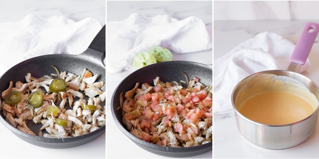
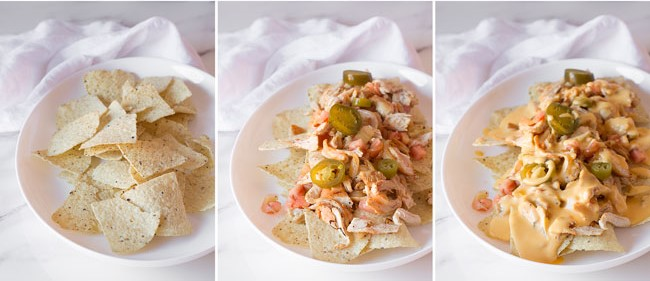

Receta de Nachos Mexicanos
Ingredientes
- 200g de totopos (nachos)
- 150g de queso cheddar rallado
- 1 tomate pequeño
- 1 jalapeño
- Crema agria
- Guacamole
Preparación paso a paso

Paso 1 - Preparar los ingredientes: Reúne los totopos en un recipiente amplio. Lava y pica el tomate en cubos pequeños, rebana el jalapeño en rodajas finas y asegúrate de tener lista la crema agria, el guacamole y el queso rallado para montar los nachos al horno.

Paso 2 - Montar y hornear: En una bandeja para horno, coloca una capa de totopos, añade queso rallado por encima, luego otra capa de totopos y más queso. Hornea durante 5-7 minutos a 180°C o hasta que el queso se derrita por completo.
Paso 3 - Servir con guarniciones: Saca los nachos del horno y añade el tomate picado, jalapeños, guacamole y crema agria al gusto. Sirve caliente en una bandeja o plato grande y disfruta acompañado de una bebida fresca.